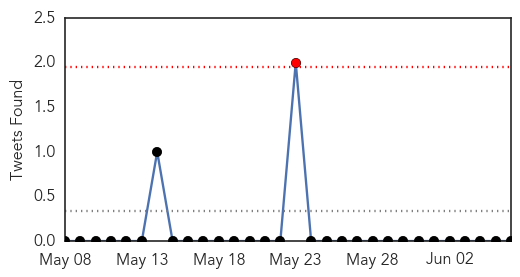
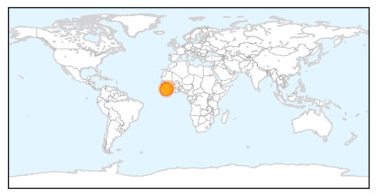

MERS
30-Day Web Trend
0 alerts, 0 warnings

30-Day Twitter Trend
1 alerts, 0 warnings

Article Locations

Article Confidences

Top Articles:
- 1.000
- World Health Organisation experts find hospital breaches worsened MERS outbreak in UAE
- 1.000
- WHO experts find hospital breaches worsened MERS outbreak in UAE
- 1.000
- WHO experts find hospital breaches worsened MERS outbreak in UAE
- 0.999
- WHO: Infection control gaps helped fuel UAE MERS surge
- 0.998
- WHO experts find hospital breaches worsened MERS outbreak in UAE
- 0.996
- WHO concludes a MERS-CoV risk assessment mission in the United Arab Emirates
- 0.993
- Mers: WHO team suspects breach in hospital protocol
- 0.990
- Saudi authorities warn locals, tourists to stay away from camels amid MERS virus outbreak
- 0.987
- International experts praise UAE’s Mers coronavirus efforts
- 0.987
- Middle East Respiratory Syndrome-Corona Virus lecture set for pilgrims
- 0.984
- Fakeih: 80% drop in MERS infectionsHealthcare
- 0.966
- Pilgrims converge on Mecca, undeterred by MERS
- 0.952
- Pilgrims pour into Saudi undeterred by MERS fears
- 0.938
- MERS coronavirus threatens thousands of Afghan pilgrims - Khaama Press (KP)
- 0.900
- Pilgrims around the world ignore Mers fears
- 0.757
- Yikes! Saudi minister warns people to avoid close contact with camels due to MERS virus
Top Tweets:
-
No tweets found for Jun 06, 2014
Ebola
30-Day Web Trend
0 alerts, 0 warnings

30-Day Twitter Trend
1 alerts, 0 warnings

Article Locations
Article Confidences

Top Articles:
- 1.000
- 200Ebola Deaths Confirmed in Sub-region, No New Cases Reported in Liberia
- 0.998
- As Suspected Cases Approach 100, SLPP Joins to Fight Ebola
- 0.987
- Harvard team helps with Ebola detection in Sierra Leone
- 0.965
- Sierra Leone-based Sula Iron & Gold "ready to act" amid Ebola outbreak
- 0.961
- Liberia: Liberia: Ebola Virus Disease outbreak - Emergency appeal n MDRLR001 operations update n 2
- 0.942
- Liberia: Ebola Virus Disease outbreak - Emergency appeal n° MDRLR001 operations update n° 2 - Liberia
Top Tweets:
-
No tweets found for Jun 06, 2014